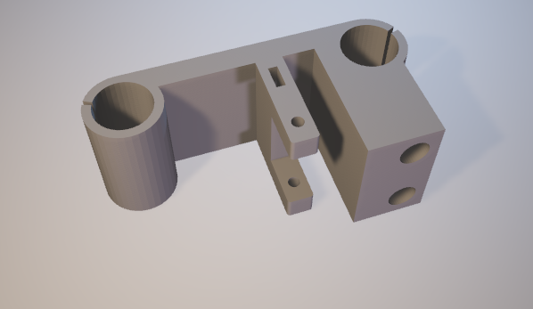
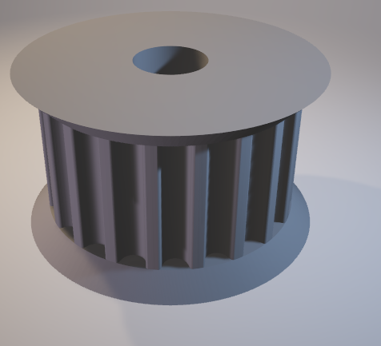
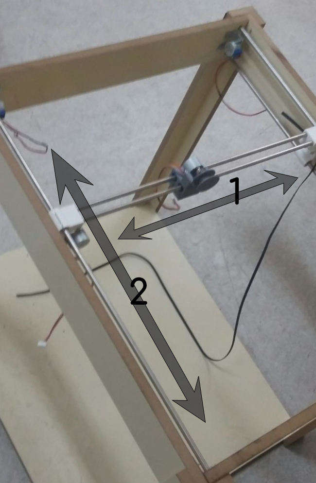
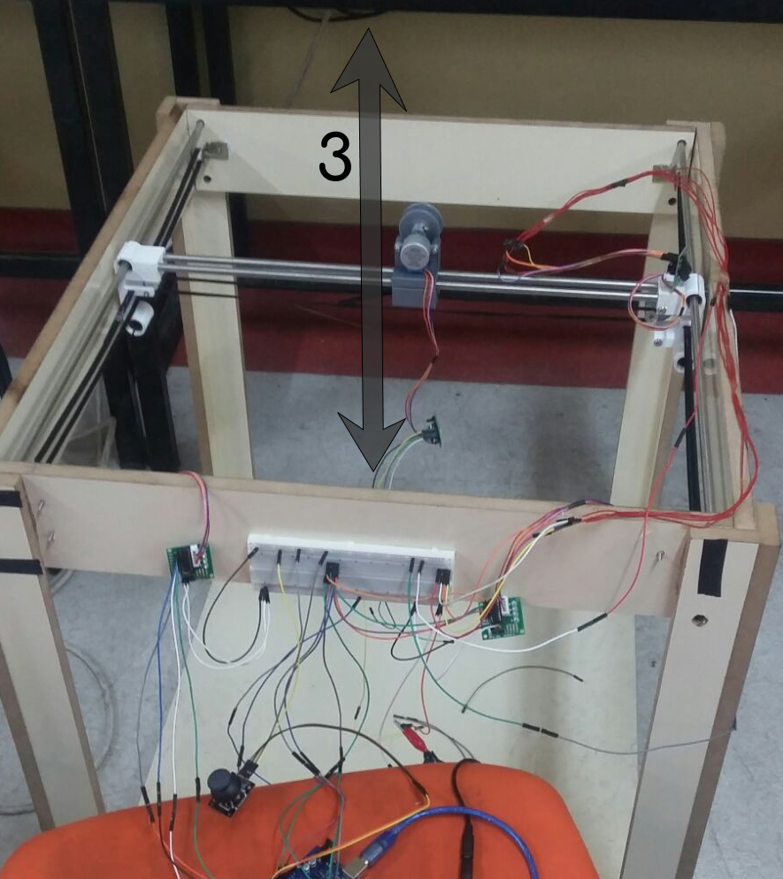

Projemizin temeldeki iskelet çizimleri Thinkercad üzerinde gerçekleştirilmiştir. Bu çizimlere göre parçalar kesilmiş, birleştirilmiş ve temel iskelet yapısı oluşturulmuştur.


Robot kolun mekanik kısmı için gerekli malzemeler temin edildikten sonra ise SolidWorks üzerinde çizimi yapılan mekanik bileşenler milimetrik olarak oluşturulmuştur.


Soldaki resimde, robot kolun 1 ile numaralandırılan ekseni 1 adet step motor ile robot kolun o eksende hareket etmesini sağlamaktadır. 2 ile numaralandırılan eksende hareket ise birbirine paralel, robot kolun gövdesine sabitlenmiş 2 adet step motor tarafından sağlanmaktadır. Bu step motorlar birbirlerine paralel şekilde çalışmaları gerektiğinden ikisinin de başlangıç ve bitiş pozisyonları eş zamanlı ayarlanmıştır.
Sağdaki resimde, 3 ile numaralandırılmış eksen boyunca hareket ise yine bir step motorun dönme hareketi ile sağlanmıştır. Önceki hareketlerdeki sistem, dişli kayış ve çarklarla sağlanırken burada bir çeşit makara sistemi ile sağlanmıştır.
Mekanik kısmın son aşamasında ise 3D yazıcıdan çıkarılan gripper, son eksenin ucuna bir servo motor ile kontrol edilmek üzere eklenmiştir.